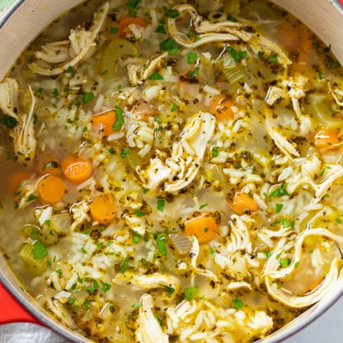

Chicken & Rice Soup
Home

Description
Chicken & Rice Soup is a dish from my girlfriend's family. It is how it sounds; made with love for the comfort of those you cherish.
Ingredients
- 2 Tbsp Butter
- 1 Cup Uncooked Rice
- 10 Cups Chicken Broth
- 1 Cup Sauteed Onions
- 1 Cup Chopped Carrots
- Meat From 1 Rotisserie Chicken
Steps
- Start with 2 tbsp of butter in the bottom of the pan to saute the onions and carrots.
- Add carrots, onions, and rice to a pot with the chicken broth.
- Cook for 20 minutes, add chicken, then cook for another 15-20 minutes until the rice is soft.
- If the broth has evaporated, add more.
- Serve soup.
- Day after: the rice has absorbed the liquid, add more broth to the desired "soupiness" level and heat.